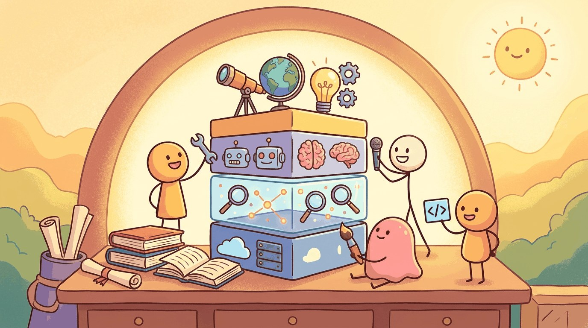

"Every modality is a tax on attention. The trick is making the user forget which one they are looking at."
Pip, Multimodal-Outfitted AI Agent
Chapters 20 through 24 walked the modalities one by one. This chapter is the multimodal toolkit: which library handles audio well, which one handles documents, which one is opinionated about VLMs, and how to wire them together without a YAML graveyard.
Part VII covered four modalities: image (Imagen 4, FLUX.1, SD3, Midjourney, DALL-E), video (Veo 2, Sora 2, Runway Gen-4, Kling), speech (ElevenLabs, Whisper), and music (Suno v5, MusicGen). Each modality has its own platform shelf, library, dataset, and model. This chapter consolidates them.
Chapter Overview
Part V covered audio, video, document AI, VLMs, 3D, and VLA models. This chapter consolidates the multimodal toolchain: closed-API platforms (frontier) and open-weight platforms (running), Hugging Face diffusers as the multimodal analog of transformers, the canonical pretraining (LAION-5B, WebVid, AudioSet) and evaluation (COCO, VQA, MMMU) datasets, the model zoo organized by modality, and the external venues that keep the multimodal toolbox current.
Multimodal Tools of the Trade mirrors the text-LLM toolbox of Part II and Part III, but the model count is larger and the cost-quality envelope changes faster. Use this chapter as the bookmarkable index for every recipe in Part V.
- Compare closed-API and open-weight multimodal platforms across modality coverage and cost.
- Use Hugging Face diffusers and transformers together for a multimodal pipeline.
- Pick the right teaching dataset (LAION-5B, WebVid, AudioSet, COCO, VQA, MMMU) for a given exercise.
- Navigate the multimodal model zoo by modality, license, and inference footprint.
- Identify the conferences, blogs, and communities that maintain the multimodal stack.
For all four modalities, one library wraps the open-source side:
pip install diffusers transformersdiffusers ships every major open diffusion architecture (SD, SD3, FLUX, AudioLDM, MusicGen) behind a uniform Pipeline API. For the closed APIs you also need the providers' SDKs.
Sections in This Chapter
Prerequisites
- At least one of Chapter 20, 21, 22, 23, or 24
- LLM API tooling from Chapter 14
- Python and shell comfort
- 25.1 Platforms Multimodal platforms split the same way the text-LLM platforms in Section 25.1 do: closed APIs at the frontier, open weights behind them.
- 25.2 Libraries & Frameworks Hugging Face's diffusers is the multimodal analog of transformers from Module 12.
- 25.3 Datasets & Benchmarks The structural shape mirrors text pretraining datasets from Section 25.3: a noisy web-scale corpus for pretraining (LAION-5B, WebVid, AudioSet) and curated evaluation sets for benchmarking (COCO,...
- 25.4 Models The shape of the table on this page is the shape of the text model-zoo discussion in Module 12 and Section 25.4.
- 25.5 External Reading & Communities Like the text-LLM reading list in Section 25.5, the multimodal stack splits across foundational papers, applied tutorials, and online communities.
What Comes Next
Next: Chapter 26: AI Agent Foundations, opening Part VI. Parts I to V built models that perceive, reason, and produce, but each call is one-shot. Part VI is where the model gets agency: it plans, calls tools, remembers, and coordinates with other agents and humans. The shift is from "predict the next token" to "decide the next action".